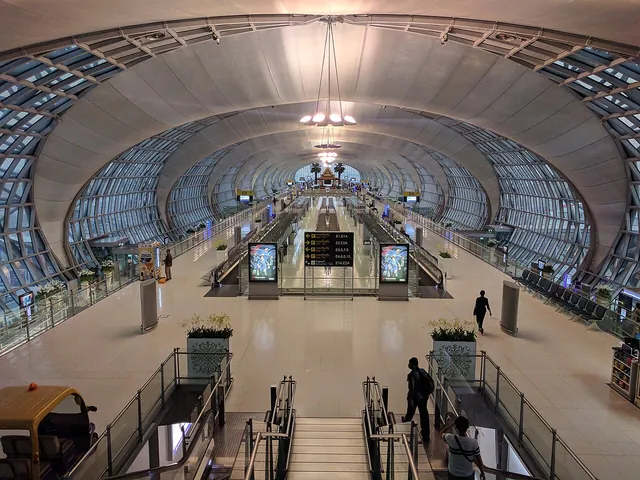
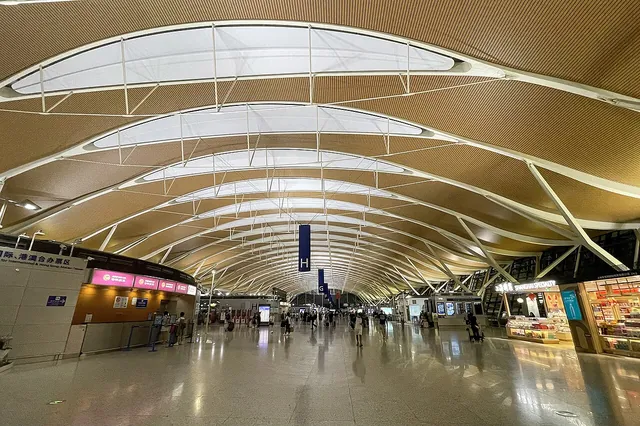
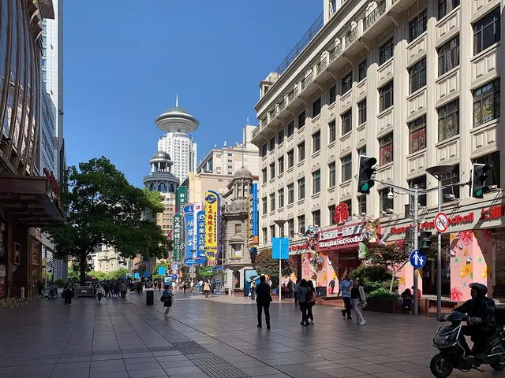
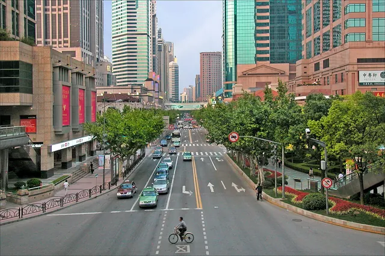
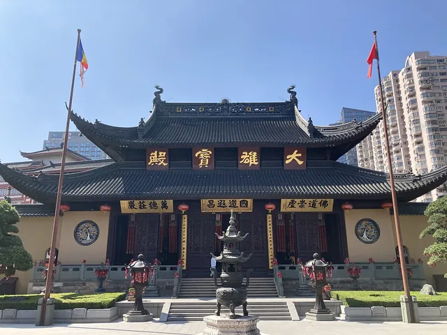
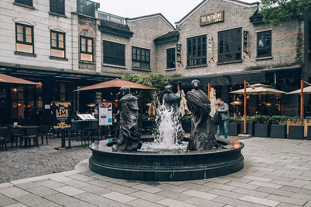
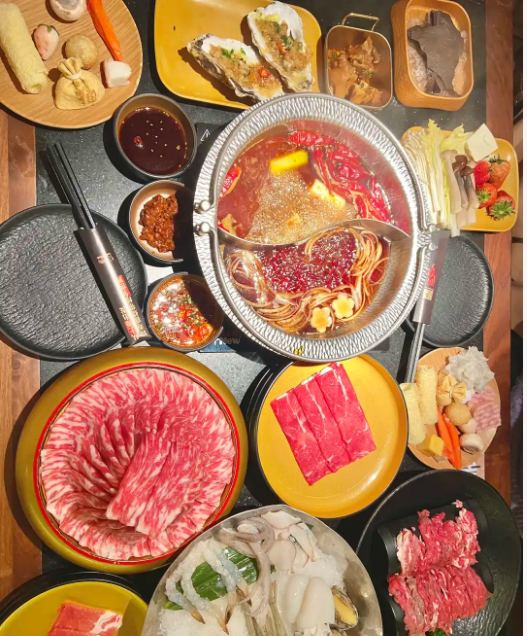
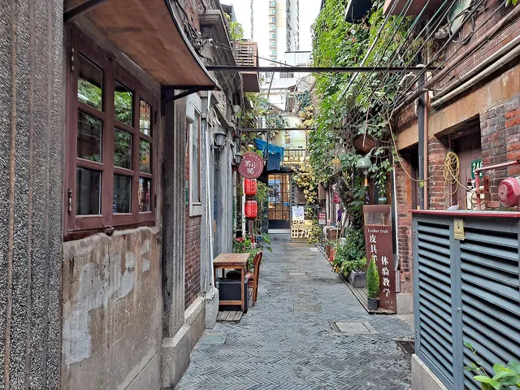

เซี่ยงไฮ้ 8 วัน 7 คืน
5–12 ธ.ค. 2026 · ไฟคริสต์มาส The Bund · Disneyland
🌤️ อากาศเซี่ยงไฮ้
ค่าเฉลี่ยช่วงเดือนธันวาคม🗓️ แผนรายวัน
เดินทางไปเซี่ยงไฮ้
เสาร์ 5 ธ.ค. · 🌙 ~8°C กลางคืน

ภาพ: Grendelkhan · CC BY-SA 3.0เช็คอินสนามบินสุวรรณภูมิ
เผื่อเวลา 3 ชม. ก่อนบิน · ชั่งกระเป๋าถือไม่เกิน 10 กก. · Spring Airlines เป็นโลว์คอสต์ ไม่มีอาหารฟรีบนเครื่อง
บิน BKK → PVG · 9C7284
บินประมาณ 4 ชม. 20 น. · เวลาจีนเร็วกว่าไทย 1 ชม.

ภาพ: Windmemories · CC BY-SA 4.0ถึงสนามบินผู่ตง อาคาร 2
ผ่าน ตม. รับกระเป๋า แล้วเรียก Didi หรือต่อคิวแท็กซี่ · ยื่นการ์ดที่อยู่ภาษาจีนให้คนขับดูได้เลย
เช็คอิน Atour X Hotel ที่พัก
ชั้น 1 และ 6–11 อาคาร Yunhai, 1329 Huaihai Middle Road เขต Xuhui · เดิน ~160 ม. ถึง MRT Changshu Road (สาย 1, 7) · โทร +86 150 0212 8856, +86 21 3356 1052
เที่ยวเบา ๆ + The Bund
อาทิตย์ 6 ธ.ค. · ⛅ 5–10°C
ออกจากที่พัก ไป People's Square
รถไฟฟ้าสาย 1 จาก Changshu Road ไป People's Square ~15 นาที หรือเรียก Didi
Lai Lai Xiao Long Bao (莱莱小笼) มื้อกลางวัน
เสี่ยวหลงเปาไข่ปู Michelin Bib Gourmand · 506 Tianjin Road ใกล้ People's Square · วันอาทิตย์คิวยาว มาก่อนเที่ยงดีกว่า · ถ้าสาขานี้ปิด มีสาขา Jing'an ที่ 1726 Beijing West Road ใกล้ที่พัก (เปิด 8:00–14:00, 15:00–20:00)
People's Square
เดินเล่นในสวน ถ่ายรูป แล้วเดินต่อไปพิพิธภัณฑ์ซึ่งอยู่ในจัตุรัสเดียวกัน
ภาพ: Gary Todd · CC0 Shanghai Museum (上海博物馆)
พิพิธภัณฑ์ศิลปะจีนโบราณ ทองสัมฤทธิ์ เซรามิก ภาพวาด · อยู่ในตึก หลบหนาวได้ · เปิด 9:00–17:00 เข้าได้ถึง 16:00 · ไม่ต้องจองล่วงหน้า (ยกเว้นนิทรรศการพิเศษ) · พกพาสปอร์ต · ปิดวันจันทร์ · ดูประมาณ 2 ชม. (เข้าได้ถึง 16:00) แล้วเดินไป Nanjing Road

ภาพ: Chainwit. · CC BY 4.0Nanjing Road Pedestrian Street
ถนนช้อปปิ้งหลัก ไฟคริสต์มาสตามห้าง · เดินต่อไป The Bund ได้เลย
Rei Flower Coffee Bar (汭REi·FLOWER COFFEE BAR) คาเฟ่
คาเฟ่ริมคลอง Suzhou Creek ย่าน North Bund · พักขาก่อนชม The Bund · ลองลาเต้ดอกหอมหมื่นลี้ (桂花拿铁) ไอศกรีมมะพร้าว · ~¥55/คน · 234 North Suzhou Road (北苏州路234号) ใกล้สถานี Tiantong Road ทางออก 3 · จากปลาย Nanjing Road เดินข้ามสะพาน Waibaidu Bridge ไม่กี่นาที · ยังไม่ได้ยืนยันเวลาปิด เช็กใน Amap/Dianping ก่อน
ภาพ: Lloyd Tudor · CC BY-SA 4.0 The Bund ชมวิวแม่น้ำหวงผู่
ตึกฝั่ง Lujiazui เปิดไฟยามค่ำ ธันวาคมมีไฟประดับสวยเป็นพิเศษ · ฟรี · คืนวันอาทิตย์คนแน่น ระวังกระเป๋า
Wukang Road + West Bund + Lujiazui
จันทร์ 7 ธ.ค. · ☁️ 4–8°C
ภาพ: N509FZ · CC BY-SA 4.0 เดินเล่น Wukang Road
ตึก Wukang Mansion (武康大楼) ตึกยุโรปเก่า ถนนต้นไม้ร่มรื่น คาเฟ่ถ่ายรูปสวย
Gate M West Bund Dream Center (西岸梦中心)
โรงงานปูนซีเมนต์เก่าริมแม่น้ำหวงผู่ ปรับเป็นย่านคาเฟ่ ร้านอาหาร ร้านค้า ตึกอินดัสเทรียลถ่ายรูปสวย · ทางเดินริมน้ำ 800 ม. · ดูพระอาทิตย์ตกริมน้ำราว 16:50 · 2266 Longteng Avenue · Didi จาก Wukang Road ~15 นาที หรือรถไฟฟ้าสาย 11 สถานี Longyao Road · ฤดูหนาวที่แล้วมีลานสเก็ตน้ำแข็งริมแม่น้ำ (ปีนี้ยังไม่ยืนยัน) · 17:45 เรียก Didi ไป Lujiazui ~25 นาที

ภาพ: Jean-Pierre Dalbéra · CC BY 2.0เดินถนน Huaihai Road แถวที่พัก
ถนนช้อปปิ้งหน้าที่พัก ไฟประดับสวยตอนค่ำ · ไม่ไปก็ได้ถ้าเหนื่อย
วัดพระหยก + เมืองเก่า + Yu Garden
อังคาร 8 ธ.ค. · 🌥️ 4–9°C

ภาพ: Nikolamikovic82 · CC0Jade Buddha Temple (玉佛禅寺)
เปิด 8:00–16:30 · ไปเช้าคนน้อย · ใช้เวลาราว 1 ชม. แล้ว Didi ไป Canton 8 ~25 นาที

ภาพ: Leynadmar · CC BY-SA 4.0Xintiandi (新天地)
ตรอกอิฐแดงสไตล์ Shikumen ผสมจีน-ยุโรป · คาเฟ่ ร้านบูติก
รองเท้า Pane ที่ TX Huaihai ช้อป
แบรนด์รองเท้าผ้าใบเซี่ยงไฮ้ · ชั้น L1 ห้าง TX Huaihai, 523 Huaihai Middle Road (淮海中路523号 TX淮海) · เดินจาก Xintiandi ได้ · เปิด 10:00–22:00 · รุ่นยอดนิยม Aria, Zephyr Training · บางไซซ์หมดบ่อย · ออกจากร้านไม่เกิน 14:45 แล้วนั่ง Didi ไป Yu Garden ~10–15 นาที (ต้องเข้าก่อน 16:00) · ถ้าไซซ์หมด วันที่ 6 ไปอีกสาขา (Yongyuan Road) และวันที่ 7 แวะร้านนี้ซ้ำได้
ภาพ: Chainwit. · CC BY 4.0 Yu Garden (豫园) เข้าชมในสวน
สวนจีนโบราณกว่า 400 ปี · เปิด 8:45–16:45 ปิดวันจันทร์ ต้องเข้าก่อนบ่าย 4 · ซื้อตั๋วหน้างานหรือในแอป
ภาพ: Chainwit. · CC BY 4.0 Yuyuan Bazaar + City God Temple (城隍庙)
ร้านค้าและแผงขนมรอบสวน เปิดไฟสวยตอนค่ำ · ซื้อของฝาก

New Sukiyaki (牛New寿喜烧) ใกล้ Yu Garden มื้อเย็น
บุฟเฟต์สุกี้ยากี้ญี่ปุ่นชื่อดัง · เนื้อหลายเกรด ซีฟู้ด น้ำซุปหลายแบบ · เริ่ม ~149 หยวน
Shanghai Disneyland DISNEY DAY
พุธ 9 ธ.ค. · ☀️ 3–9°C
ภาพ: Phlizz · CC BY-SA 4.0 ออกจากที่พัก ไป Disney
เรียก Didi ~45–60 นาที (~¥100–150) หรือรถไฟฟ้าต่อสาย 11 ไปสถานี Disney Resort ~1 ชม. · สวนเปิดประมาณ 08:30 เช็กเวลาในแอป Shanghai Disney Resort
ภาพ: Jeremy Thompson · CC BY 2.0 Enchanted Storybook Castle
ปราสาทใหญ่ที่สุดในบรรดาดิสนีย์แลนด์ทั่วโลก ถ่ายรูปก่อนคนเยอะ
Zootopia + Tomorrowland
Zootopia: Hot Pursuit และ TRON คิวยาว · ซื้อ Premier Access ในแอปหลังเข้าสวน ~¥140–180 ต่อเครื่องเล่น
ภาพ: Phlizz · CC BY-SA 4.0 Treasure Cove
โซนโจรสลัด Pirates of the Caribbean: Battle for the Sunken Treasure
มื้อเย็นในสวน มื้อเย็น
กินก่อนไปหาที่ดูโชว์ หน้าปราสาทคนเริ่มแน่นตั้งแต่ 20:00
ภาพ: Jeremy Thompson · CC BY 2.0 Illuminate! + พลุ Magic All Around
โชว์แสงสีฉายบนปราสาท 21:15 ต่อด้วยพลุฉลองครบ 10 ปี 21:30 · วันธรรมดามีรอบเดียว · ที่ดูแบบจองต้องซื้อ Premier Access ¥299
กลับที่พัก
รถไฟฟ้าสาย 11 เที่ยวสุดท้ายออกจากสถานี Disney Resort ประมาณ 22:30 · Didi หลัง 22:00 ราคาขึ้น 2–3 เท่า (~¥300)
Zhujiajiao + Pane Jing'an
พฤหัส 10 ธ.ค. · ⛅ 4–10°C
ออกจากที่พัก ไป Zhujiajiao
เมื่อคืนกลับจาก Disney ดึก ตื่นสายได้ · Didi ~1 ชม. หรือรถไฟฟ้าสาย 17 ลงสถานี Zhujiajiao
ภาพ: BrokenSphere · CC BY-SA 3.0 เดินเล่นเมืองน้ำ Zhujiajiao (朱家角)
คลอง สะพานหิน Fangsheng Bridge (放生桥) บ้านเรือนโบราณ · นั่งเรือชมคลอง · วันธรรมดาคนน้อยกว่าเสาร์-อาทิตย์
มื้อกลางวันในเมืองน้ำ มื้อกลางวัน
ร้านริมคลองมีเยอะ ลองบ๊ะจ่าง (粽子) ของขึ้นชื่อ
กลับเข้าเมือง ไป Jing'an
เรียก Didi จาก Zhujiajiao ตรงไปถนน Yongyuan Road เขต Jing'an ~1 ชม.
รองเท้า Pane สาขา Yongyuan Road ช้อป
แฟลกชิปสโตร์แรกของแบรนด์ ขายดีที่สุด สต๊อกคนละร้านกับ TX Huaihai · ถนน Yongyuan Road (永源路) เขต Jing'an ระหว่าง Nanjing West Road กับ Yuyuan Road · ยังไม่ได้ยืนยันเลขที่อยู่และเวลาเปิด ค้น "PANE 永源路" ใน Amap/Dianping ก่อนไป · จากที่พักนั่งรถไฟฟ้าสาย 7 ไป Jing'an Temple 2 สถานี
มื้อเย็นแถว Jing'an / Nanjing West Road มื้อเย็น
ย่านห้างและร้านอาหารเยอะ แล้วนั่งรถไฟฟ้าสาย 7 กลับที่พัก 2 สถานี · คืนนี้เก็บกระเป๋าบางส่วนไว้ก่อนได้
Cocina 19 + Tianzifang + Lujiazui
ศุกร์ 11 ธ.ค. · 🌤️ 5–11°C
Cocina 19 ร้านอาหารสเปน ริม The Bund มื้อสาย
มื้อสาย ร้านเปิด 10:00 · 19 Fuzhou Road หัวมุมถนน Zhongshan East 1st Road (The Bund) · ตึกวิลล่าเก่า โต๊ะริมหน้าต่างวิวหอไข่มุก มีระเบียง · เมนูเด่น paella ซีฟู้ด · จองโต๊ะริมหน้าต่างล่วงหน้าได้ · กินแล้ว Didi ไป Tianzifang ~15 นาที

ภาพ: 钉钉 · CC BY-SA 4.0Tianzifang (田子坊) เก็บของฝาก
ตรอกซอกซอยร้านเล็ก ๆ ของฝาก คาเฟ่ · ใกล้ที่พัก · เดินเล่นสบาย ๆ ถึงราว 15:30
แวะ Pane ที่ TX Huaihai (สำรอง) ถ้ายังไม่ได้ไซซ์
เฉพาะถ้าวันที่ 4 และ 6 ยังไม่ได้ไซซ์ที่อยากได้ · ร้านอยู่ทางผ่านจาก Tianzifang ไป Lujiazui (523 Huaihai Middle Road) · ถามพนักงานวันที่ 4 ได้ว่าของจะเข้าวันไหน · ถ้าไม่ต้องแวะ ไป Superbrand ตรงได้เลย
ภาพ: Hanahu55 · CC BY-SA 4.0 Superbrand Mall (正大广场)
ห้างใหญ่ฝั่ง Lujiazui · Didi จาก Tianzifang ~20–25 นาที · ซื้อของฝากรอบสุดท้าย · ตอนค่ำออกมาดูวิว The Bund จากฝั่ง Pudong ได้ · ร้านมื้อเย็นอยู่ย่านเดียวกัน
Long Time Ago Mutton Shashlik (很久以前羊肉串) มื้อเย็น
ร้านปิ้งย่างเนื้อแกะชื่อดัง สาขา Guangyin Square (光音广场店) ถนน Yincheng Road ย่าน Lujiazui ใกล้ Superbrand · ย้ายมาจากวัน Disney เพราะโชว์จบดึก · กินเสร็จนั่ง Didi หรือรถไฟฟ้าสาย 2 กลับที่พัก
เก็บกระเป๋า
ชั่งกระเป๋า โหลดไม่เกิน 20 กก. ถือขึ้นไม่เกิน 10 กก.
เดินทางกลับ
เสาร์ 12 ธ.ค. · 🌤️ 5–11°C
เช็คเอาท์ Atour X Hotel
ต้องเช็คเอาท์ก่อน 12:00 · ฝากกระเป๋าที่ล็อบบี้ได้ถ้าจะออกไปเดินเล่นก่อน
มื้อสายแถว Huaihai Road
กินใกล้ที่พัก ไม่ควรไปไกล
ไปสนามบินผู่ตง อาคาร 2
Didi หรือแท็กซี่ ~1 ชม. · ถึงก่อนบิน 2–3 ชม.
บิน PVG → BKK · 9C7289
บินประมาณ 4 ชม. 45 น. ถึงสุวรรณภูมิ 20:45 (เวลาไทย)
✈️ ตั๋วเครื่องบิน Spring Airlines
กระเป๋า เวลาออกจากที่พัก และวิธีเช็กไฟลท์
- 🧳 กระเป๋า (ต่อคน ทั้งไปและกลับ)ถือขึ้นเครื่อง 1 ชิ้น ไม่เกิน 10 กก. ขนาดไม่เกิน 55×40×20 ซม. · โหลดรวม 20 กก. ขนาดแต่ละชิ้นไม่เกิน 100×60×40 ซม. · Spring Airlines ชั่งกระเป๋าถือค่อนข้างเข้ม และไม่มีอาหารฟรีบนเครื่อง
- ⏰ ขากลับออกจากที่พักไปสนามบินประมาณ 13:00 (นั่งรถ ~1 ชม.) ให้ถึงก่อนบิน 2–3 ชม.
- 📱 เช็กไฟลท์บน iPhoneเปิดแอป Notes หรือ iMessage พิมพ์ Fly 9C7284 หรือ Fly 9C7289 แล้วกดค้างที่รหัสที่มีเส้นใต้ เลือก Preview Flight
💰 งบประมาณต่อคน
- ตั๋วเครื่องบิน Spring Airlines ไป-กลับ13,330 ฿
- ที่พัก 7 คืน Atour X Hotel6,565 ฿
- ค่าอาหาร5,000 ฿
- ตั๋ว Disney + คูปอง 30 หยวน2,208 ฿
- ค่าเดินทางในเมือง1,000 ฿
- ค่าเดินทางไป-กลับสนามบิน800 ฿
- e-SIM632 ฿
- ประกันการเดินทาง325 ฿
💱 แปลงเงินหยวน → บาท
🎒 สิ่งที่ต้องเตรียม
0/16🆘 ช่วยเหลือในจีน
淮海中路1329号
亚朵X酒店
2号航站楼
🗣️ ล่ามแปล ไทย ⇄ จีน กดไมค์แล้วพูด
ประโยคที่ใช้บ่อย กดเพื่อฟังเสียง
เบอร์ฉุกเฉิน แตะเพื่อโทร
แนะนำแคปหน้านี้เก็บไว้ เผื่อไม่มีเน็ต
เคล็ดลับเที่ยวเซี่ยงไฮ้ 2026
วีซ่า
พาสปอร์ตไทยเข้าจีนแบบ Free Visa อยู่ได้สูงสุด 30 วัน (ไม่เกิน 90 วันใน 180 วัน) · ตั้งแต่ 1 มี.ค. 2026 ไทย-จีนยกเว้นวีซ่าให้กันแบบสองทาง มีผลถึง 31 ธ.ค. 2026 ครอบคลุมทริปนี้
แผนที่ในจีน
Google Maps ใช้ไม่ได้ถ้าไม่เปิด VPN · ลิงก์ในเว็บนี้ใช้ Apple Maps (ใช้ได้ในจีน) และ Amap 高德 ซึ่งคนท้องถิ่นใช้กัน
จ่ายเงิน
โหลด Alipay / WeChat Pay ผูกบัตรต่างชาติไว้ล่วงหน้า ร้านส่วนใหญ่ไม่รับเงินสด
รถไฟฟ้า
ใช้ QR ในแอป Alipay หรือ Shanghai Public Transportation Card ครอบคลุมเกือบทุกจุดเที่ยว
อินเทอร์เน็ต
Google / Facebook / LINE ใช้ไม่ได้ในจีน โหลด VPN หรือใช้ WeChat แทนก่อนเดินทาง
อากาศ
หนาว 4–11°C ใส่เสื้อแบบหลายชั้น เพราะในห้างและร้านเปิดฮีตเตอร์ร้อน
Disneyland ครบ 10 ปี
ปีนี้มีแคมเปญ "With You, It's Magic+" โชว์หน้าปราสาทใหม่และขบวนพาเหรดพิเศษ · ซื้อตั๋วล่วงหน้าในเว็บหรือแอปทางการ
คริสต์มาส
ธันวาคมมีไฟประดับตามห้างและ The Bund สวยเป็นพิเศษ